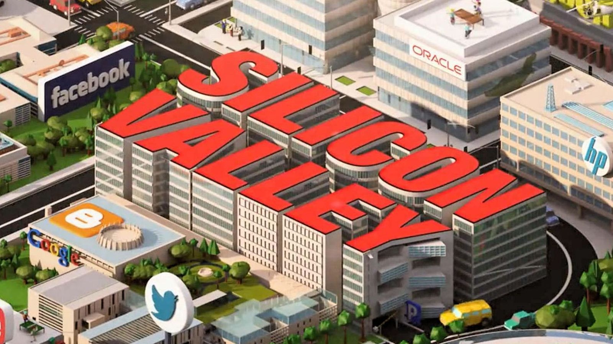

|
|
Silikon Vadisi, Kuzey Kaliforniya'daki San Francisco vadisinin bir parçası olan San Jose vadisine verilen isimdir. Bu ismin sebebi ise bölgede yoğun olarak üretim ve geliştirme faaliyetinde bulunan silikon kırmık (yonga, İng:chip) üreticileridir ve teknoloji alanında gelişmelere büyük katkı sağlamaktadır. Sonradan, yüksek teknoloji ile ilgili sektörleri ifade etmek için kullanılan isim olmuştur. Çünkü pek çok bu tip firmanın merkezi veya çıkış yeri burasıdır. Bunlara örnek olarak; Intel, Cisco, Google, HP, Maxtor, Softway Solutions, Apple, Microsoft, Oracle, Nvidia, AMD, Facebook, Twitter, Mozilla,Yahoo! sayılabilir. Wikimedia Commons'ta Silikon Vadisi ile ilgili medyaları bulabilirsiniz. Koordinatlar: 37.37°N 122.04°W (Harita) |
||||
|  |